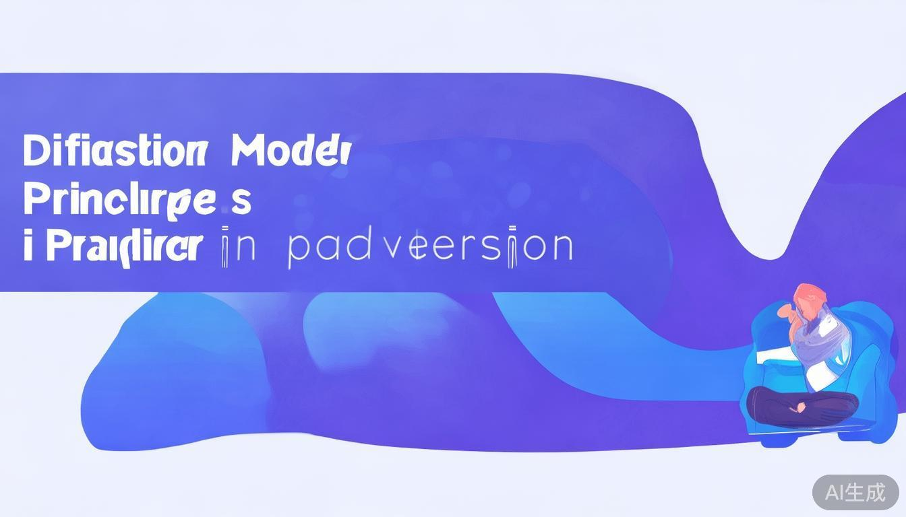

多模态 AIGC：文生图与文生视频
本章是AIGC落地最刚需的内容模块，覆盖从静态图像到动态视频的全链路生产方法，学完后你能独立完成商用海报、短视频素材、数字人播报内容的制作，掌握提示词优化、模型微调的核心技巧，避开常见的版权合规风险，无需专业设计基础即可产出达到商用标准的多模态内容。
AIGC全景与工具矩阵
当前多模态AIGC已经形成覆盖文本、图像、音频、视频、3D资产的完整工具体系，按照使用门槛可以分为云端SaaS类、本地部署类、开源二次开发类三个层级，不同需求的用户可以选择对应工具，不需要盲目追求高配置本地部署。普通内容创作者用云端工具即可满足90%以上的生产需求，开发者和专业创作者可以通过本地部署获得更高的自由度。
我们整理了主流工具的适用场景与门槛对照表，方便大家快速选型：
| 工具类型 | 代表产品 | 适用场景 | 使用门槛 | 成本参考 |
|---|---|---|---|---|
| 文生图云端工具 | 即梦AI、可灵AI、文心一格、Midjourney | 快速出海报、素材图、创意草图 | 极低，注册即可用 | 0.1-0.5元/张，月卡30-100元 |
| 文生图本地工具 | Stable Diffusion WebUI、ComfyUI | 定制化生成、批量生产、模型微调 | 中等，需4G以上显存N卡 | 免费，仅硬件成本 |
| 文生视频工具 | 可灵AI、即梦AI、Runway、Pika | 短视频素材、产品宣传片、动画片段 | 低，支持文/图直接生成 | 0.5-2元/秒，月卡100-300元 |
| 数字人工具 | 剪映数字人、硅基智能、HeyGen | 口播视频、课程录制、直播带货 | 极低，支持音频/文本驱动 | 1-5元/分钟，定制数字人数千元起 |
工具选型的核心逻辑是“优先用云端工具跑通流程，有定制需求再尝试本地部署”，初期不要把时间浪费在环境配置上，先通过云端工具熟悉生成逻辑，再根据需求升级工具链。
扩散模型原理通俗版

很多人觉得扩散模型原理复杂，其实可以用“磨玉石”的过程类比：正向扩散过程就是把一块清晰的玉石（真实图像）一步步磨成碎沙（随机噪声），每一步都加一点噪声，直到最后完全变成没有规律的噪点；反向扩散过程就是AI学习“把碎沙重新拼成玉石”的过程，训练时AI会反复观察从噪声到清晰图像的每一步降噪规律，学会之后就能从随机噪声出发，一步步还原出符合文本描述的清晰图像。
扩散模型生成图像的核心是“文本-图像特征对齐”，模型在训练阶段学习了数十亿张图文对的对应关系，当你输入提示词时，模型会把提示词转换成特征向量，在降噪过程中不断引导生成方向，让最终的图像内容和文本描述匹配。整个生成过程不是一次性出图，通常会经过20-50步的迭代降噪，步数越多细节越丰富，但超过50步之后边际收益会快速下降。
很多新手以为生成效果完全靠提示词，实际上三个核心参数直接决定生成质量：
- 采样步数：日常使用设置20-30步即可，追求极致细节可以调到40-50步，过高会大幅增加生成时间
- CFG Scale（提示词相关性）：数值越高AI越严格遵循提示词，推荐设置7-12，数值过高会导致画面色彩失真、边缘僵硬
- 随机种子：相同种子+相同参数+相同提示词可以生成几乎完全一致的图像，方便固定构图做微调
文生图实操：Stable Diffusion/即梦/可灵
对于零基础用户，优先从即梦、可灵这类云端工具上手，操作路径非常清晰：第一步选择“文生图”功能，输入提示词，选择想要的风格（写实/二次元/国风/插画等），设置分辨率为1024*1024（方形）或者9:16/16:9的视频常用比例，点击生成即可，通常10秒内就能出4张候选图，可以选择满意的图做高清放大或者局部修改。
如果需要更高的定制自由度，可以部署本地Stable Diffusion WebUI，部署步骤对于新手也非常友好：首先安装Python 3.10和Git，从官网下载整合包解压后运行启动程序，在模型网站Civitai下载基础模型（比如写实类选Realistic Vision，二次元选Anything V5）放到models/Stable-diffusion文件夹，重启UI即可选择对应模型生成。本地生成的优势是可以无限制使用自定义模型、LoRA、ControlNet，没有内容审核之外的限制，批量生成成本为0。
不管用哪类工具，通用的实操流程是固定的：先写基础提示词生成4张低分辨率草图，选出构图最符合预期的1张，用固定随机种子的方式调整细节提示词，最后用4倍超分功能提升分辨率，整个过程通常5-10分钟就能得到可用的素材，比传统找素材、修图的效率提升10倍以上。
提示词驱动图像质量（风格/构图/负面提示）
很多新手写提示词只会写“一个女孩在海边”，生成的图往往质量差、不符合预期，高质量提示词需要按照“主体描述+场景环境+构图镜头+风格质感+参数设定”的结构来写，信息越具体，生成结果的可控性越强。比如不要只写“猫”，要写“橘色短毛猫，趴在洒满阳光的木质窗台上，旁边放着半杯热拿铁，窗边有白色纱帘被风吹起，佳能5D4拍摄，85mm f1.4镜头，浅景深，暖色调，胶片质感，4K高清”，生成的效果会有本质提升。
负面提示词是很多新手忽略的核心功能，它的作用是告诉AI“不要生成什么内容”，可以有效规避常见的生成缺陷。通用的负面提示词模板可以直接复用，不需要每次从头写：
# 通用写实类负面提示词，直接复制到负面提示词框即可
低分辨率, 模糊, 畸形肢体, 多余手指, 缺手指, 五官扭曲, 水印, 文字, 变形, 丑陋, 畸变, 坏手, 坏脸, 穿模, 比例失调, 多余肢体如果是二次元风格，可以额外加上“写实, 真人, 3D渲染”这类不符合风格的关键词，能大幅降低废片率。
风格和构图关键词是快速提升画面专业度的捷径，常用的可直接复用：
- 风格类：赛博朋克、国风工笔画、宫崎骏动画、皮克斯3D、胶片摄影、极简主义、蒸汽波、复古港风
- 构图类：居中构图、三分法构图、俯拍、仰拍、特写、全景、黄金分割、引导线构图、对称构图
- 光影类：伦勃朗光、逆光、柔光、霓虹灯光、自然光、丁达尔效应、硬阴影
文生图进阶：ControlNet/LoRA模型
基础文生图最大的问题是构图随机，想要固定人物姿态、线稿上色、还原参考图构图，就需要用到ControlNet插件，它相当于给AI加上了“精准控制的手脚”，可以通过线稿、深度图、姿态骨架、分割图等条件严格控制生成结果的结构，不会出现AI自由发挥导致构图跑偏的问题。比如你上传一张人物跳舞的骨架图，ControlNet就能让生成的人物严格保持这个跳舞的姿态，不管换什么服装、什么场景都不会变形。
ControlNet最常用的三个模型新手可以优先掌握：OpenPose模型用来控制人物姿态，上传任意人物照片就能提取骨架，固定人物动作；Canny模型用来提取线稿，可以把手绘的草稿、线稿直接上色成成品图；Depth模型用来提取画面深度信息，可以把普通照片转换成其他风格，同时保持原来的空间层次完全不变。使用时只需要在ControlNet面板上传参考图，勾选“启用”，选择对应预处理器和模型，权重设置为0.7-0.9即可，权重太高会导致画面生硬，太低会失去控制效果。
LoRA模型是一种小体积的微调模型，通常大小在几十到几百MB，不需要重新训练整个大模型，就能让AI学会特定的人物、风格、物体。比如你想要生成特定的IP形象、特定的服装风格、特定的明星脸，只需要下载对应的LoRA模型，放到models/Lora文件夹，在提示词里加入<:lora模型名:权重>即可触发，权重通常设置0.6-0.8，权重太高会导致画面过拟合、出现瑕疵。新手不需要自己训练LoRA，Civitai和 LiblibAI 上已经有数十万免费的公开LoRA，覆盖绝大多数常见的风格和人物需求。
文生视频与图生视频
文生视频的技术逻辑是在扩散模型的基础上增加了时间维度的一致性约束，不仅要保证每一帧画面清晰，还要保证帧与帧之间的内容连贯，不会出现人物变形、物体跳变的问题。当前主流工具比如可灵、即梦已经支持最长10秒、1080P分辨率的视频生成，支持设置运动幅度、镜头运动方向（推/拉/摇/移），生成质量已经可以满足短视频素材的需求。
文生视频的提示词和文生图有明显区别，除了画面内容之外，还要明确描述镜头运动和动态效果，比如不要只写“猫在窗台上”，要写“橘色短毛猫趴在洒满阳光的木质窗台上，尾巴轻轻晃动，旁边的热拿铁冒着淡淡的白汽，白色纱帘被风轻轻吹动，镜头缓慢推近到猫咪的脸，暖色调，4K，60帧，电影质感”，生成的视频动态效果会自然很多。图生视频是更可控的方式，先用文生图生成一张满意的关键帧图片，再上传到图生视频功能，设置运动幅度为中等（推荐3-5，数值太高容易出现变形），就能生成和原图风格、内容完全一致的动态视频，废片率比纯文生视频低60%以上。
新手生成视频时要注意三个避坑点：第一，初期不要生成超过5秒的视频，时长越长越容易出现人物变形、穿模的问题；第二，尽量不要生成有复杂手部动作、多人互动的内容，当前模型对复杂动态的处理还不够成熟；第三，生成后如果有局部瑕疵，可以用视频局部重绘功能修改，不需要重新生成整个视频，能节省大量时间。
数字人与语音合成
数字人是多模态AIGC落地商业化最成熟的场景之一，本质是“语音驱动的人物形象生成”技术，只需要输入文本或者音频，就能生成和真人几乎无差别的口播视频，不需要真人出镜、不需要搭建直播间，就能生产课程、带货、口播类内容。当前主流工具比如剪映数字人、硅基智能、HeyGen都提供了上百个现成的公共数字人形象，覆盖商务、休闲、二次元等多种风格，选择形象后输入文案，选择配音音色，10分钟就能生成一条完整的口播视频。
如果需要打造专属个人IP，也可以定制专属数字人，只需要拍摄3-5分钟本人正脸说话的高清视频，上传到平台训练24小时左右，就能得到和本人外形、声音一致的数字人，成本通常在数千元，比真人拍摄的长期成本低很多。语音合成现在已经能做到几乎和真人无差别，支持调整语速、停顿、情绪，甚至可以克隆自己的声音，只需要录制1分钟清晰的语音样本，就能生成和自己声音完全一致的配音，不需要自己录音就能做内容。
数字人内容生产的标准流程非常简单，新手也能快速上手：
- 写好口播文案，控制时长在1-3分钟，避免过长导致数字人口型出错
- 选择匹配内容风格的数字人形象，选择对应的配音音色，调整语速到每分钟120-150字
- 生成视频后，添加字幕、背景素材、背景音乐，导出为1080P 30帧的视频即可
整个过程不需要任何剪辑基础，单条视频制作时间不超过20分钟，效率是真人拍摄的5倍以上。
AIGC版权与合规
AIGC内容的版权问题是很多创作者最关心的点，当前我国的司法实践已经明确：如果是创作者通过自己的提示词设计、参数调整生成的内容，具有一定的独创性，创作者享有对应的著作权，可以用于商用；但如果是用他人享有版权的IP、人物形象生成内容，或者生成的内容和现有 copyrighted 作品实质性相似，就会构成侵权。
使用AIGC工具时要注意三个核心合规红线，避免法律风险：
- 不要生成涉及政治敏感、色情暴力、虚假信息的内容，所有公开传播的AIGC内容需要按照监管要求明确标注“AIGC生成”
- 不要未经授权使用他人的肖像、知名IP、受版权保护的作品训练LoRA或者生成内容，比如用明星形象生成商业推广内容、用迪士尼IP做周边产品，都属于侵权行为
- 商用内容优先选择有版权承诺的平台生成，比如即梦、可灵、文心一格都明确承诺用户生成的内容商用版权归用户所有，平台不会追责，尽量不要用没有明确版权声明的开源模型生成商用内容
另外要注意，很多AIGC工具的用户协议里会约定用户生成的内容平台可以用于训练，如果是保密的商业内容，不要上传到公开的云端工具生成，可以用本地部署的模型生成，避免内容泄露。
小结与练习
核心收获
- 多模态AIGC工具分为云端SaaS、本地部署两类，新手优先从云端工具上手，核心生成逻辑基于扩散模型的“降噪生成”原理，掌握采样步数、CFG Scale等核心参数即可快速提升生成质量
- 文生图的可控性可以通过结构化提示词、负面提示词、ControlNet、LoRA四个维度提升，不需要专业设计基础就能产出商用级图像素材
- 文生视频、数字人技术已经达到商用标准，生产效率是传统内容生产方式的5-10倍，使用时需要注意版权合规，规避侵权风险
动手练习
- 用即梦/可灵的文生图功能，按照“主体+场景+构图+风格”的结构写提示词，生成一张1024*1536（9:16比例）的春日主题海报，添加通用负面提示词，调整CFG到7-9，选出最满意的一张做4倍超分
- 用上一步生成的海报作为关键帧，用图生视频功能生成3秒的动态视频，设置镜头缓慢上移，运动幅度为3，观察动态效果是否自然
- 用剪映的免费数字人功能，生成一段1分钟的AIGC科普口播视频，添加字幕和背景音乐，导出为1080P视频
扩展阅读方向
可以进一步学习ComfyUI的工作流设计，掌握更复杂的批量生成、多图融合、AI视频剪辑工作流，实现全自动化的内容生产管线，适合需要批量生产内容的自媒体、电商从业者。
本文由本站 AI 创作整理，内容基于公开知识/官方资料提炼，信息请以官方发布为准； 涉及的历史事件、产品与数据均可在公开渠道查证，本站不编造来源。引用外部内容遵循其原始许可，标注出处即可。